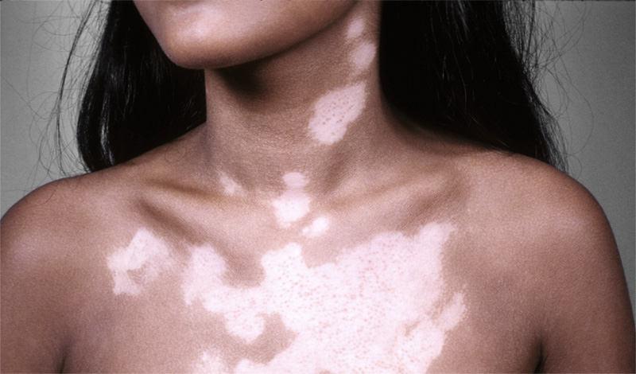

အသားေရာင္ေျပာင္းလဲျခင္း

Normal pigmentation ဆိုတာ -
လူတစ္ေယာက္ရဲ႕ ေမြးရာပါအသားအေရာင္ ပံုမွန္ရွိသင့္တဲ့အေရာင္အတိုင္း ရွိတာကို ေခၚတာပါ။ လူတစ္ေယာက္ဟာ က်န္းမာေရးေကာင္းမြန္ၿပီး ပံုမွန္ျဖစ္ေနမယ္ဆိုရင္ သူ႔ရဲ႕ အသားအေရဟာ ဒီအတိုင္းပဲ ရိွေနပါလိမ့္မယ္။
ထိခိုက္မႈတစ္ခုခုေၾကာင့္ ျဖစ္ျဖစ္၊ ေရာဂါတစ္ခုခုေၾကာင့္ျဖစ္ျဖစ္ အသားအေရာင္ေျပာင္းလဲမႈ ျဖစ္လာႏိုင္ပါတယ္။
အသားအေရာင္ရင့္လာတာ (ပိုညိဳလာတာ၊ မည္းလာတာ)ကို Hyperpigmentation လို႔ ေခၚပါတယ္။
အသားအေရာင္ေဖ်ာ့သြားတာ (ပိုျဖဴေဖြးလာတာ)မ်ိဳး ကိုေတာ့ Hypopigmentation လို႔ေခၚပါတယ္။
ရာသီဥတုနဲ႔ ေနရာေဒသေျပာင္းလဲမႈေၾကာင့္ အသားအေရာင္ အနည္းငယ္ ေျပာင္းလဲတာမ်ိဳးကေတာ့ လူတိုင္းမွာ ျဖစ္ေလ့ရိွၿပီး ဒါဟာ ပံုမွန္ပါပဲ။
_____________________ x _____________________
အသားအေရာင္ရင့္လာျခင္း -Hyperpigmentation
ဒါဟာ အေရျပားမွာရိွတဲ့ မယ္လာနင္ (Melanin)ဆိုတဲ့ဓာတ္ အမႈန္ေလးေတြ မ်ားလာလို႔ ျဖစ္ရတာပါ။
ကိုယ္ဝန္ေဆာင္ တခ်ိဳ႕ဟာ ကိုယ္ဝန္ေဆာင္ေနခ်ိန္အတြင္းမွာ မယ္လာနင္ ပမာဏ မ်ားျပား လာတတ္ပါတယ္။ မီးဖြားၿပီးခ်ိန္မွာ ျပန္ေလ်ာ့က် သြားေလ့ရိွၿပီး စိုးရိမ္စရာမရိွပါဘူး။
ကိုယ္ခႏၶာမွာ အက္ဒရီနယ္ဂလင္း ဆိုတာရိွပါတယ္။ ဒီဂလင္း ပံုမွန္အတိုင္း မလုပ္ေဆာင္ႏိုင္တဲ့အခါ မယ္လာနင္ ပမာဏ မ်ားျပားလာၿပီး အသားအေရာင္ ေျပာင္းလဲလာႏိုင္ပါတယ္။
ေနေရာင္ျခည္နဲ႔ ထိေတြ႕မႈေၾကာင့္ ျဖစ္ရတဲ့ အသားအေရာင္ရင့္လာျခင္းဟာ ပံုမွန္အေျခအေနလို႔ ေျပာလို႔ ရေပမယ့္ ၾကာလာလို႔ ထိေတြ႔မႈ အရမ္းမ်ားလာရင္ မေကာင္းပါဘူး။ အေရျပားကင္ဆာ ျဖစ္ႏိုင္ေျခ တိုးပြား လာႏိုင္လို႔ပါ။
ဒါေၾကာင့္ ေနေရာင္ထဲသြားတဲ့အခါ ေနေရာင္ကာ ခရင္မ္ေတြ လိမ္းတာမ်ဳိး၊ ထီး၊ ဦးထုပ္ ေဆာင္းတာမ်ိဳး လုပ္သင့္ပါတယ္။
အခ်ဳိ႕ေဆးေတြ ဥပမာ ပိုးသတ္ေဆးအခ်ဳိ႕၊ ရင္တုန္သက္သာေစတဲ့ေဆးေတြနဲ႔ ငွက္ဖ်ားေပ်ာက္ေဆးေတြ ကလည္း အသားအေရာင္ရင့္ျခင္းကို ျဖစ္ေစပါတယ္။
_____________________ x _____________________
မွဲ႔ေျခာက္၊ တင္းတိပ္ထြက္ျခင္း
ဒါကေတာ့ အျဖစ္အမ်ားဆံုးနဲ႔ ေတြ႕ရအမ်ားဆံုး အသားအေရာင္ရင့္ျခင္း တစ္မ်ိဳးပါ။ မ်က္ႏွာနဲ႔လည္ပင္း တစ္ဝိုက္မွာ အျဖစ္မ်ားပါတယ္။
ေနေရာင္နဲ႔ တိုက္ရိုက္ထိေတြ႕တာမ်ိဳးကို ေရွာင္ႏိုင္သေလာက္ ေရွာင္ရပါမယ္။
SPF 30 နဲ႔ အထက္ရိွတဲ့ ေနေရာင္ကာခရင္မ္ကို သံုးရပါမယ္။
မ်က္ႏွာကို ေကာင္းေကာင္း အကာအကြယ္ေပးႏိုင္မယ့္ ဦးထုပ္မ်ဳိးေဆာင္းသင့္ပါတယ္။
အေကာင္းဆံုးကေတာ့ ဆရာဝန္နဲ႔ အရင္တိုင္ပင္သင့္ပါတယ္။
_____________________ x _____________________
အေရျပားအေရာင္ေဖ်ာ့လာျခင္း -Hypopigmentation
အေရျပား အေရာင္ရင့္လာျခင္းနဲ႔ ဆန္႔က်င္ဘက္ဆိုေတာ့ သူက မယ္လာနင္ အမႈန္ေလးေတြနည္းသြားလို႔ ျဖစ္ရတာပါ။
_____________________ x _____________________
ခရုသင္းေရာဂါ
Vitiligo လို႔ေခၚတဲ့ ခရုသင္းေရာဂါကေတာ့ လူသိမ်ားတဲ့ေရာဂါတစ္မ်ိဳးပါ။ အေရျပားေပၚမွာ အျဖဴကြက္ေတြ ေပၚလာတာပါ။ ေခ်ာေမြ႕တဲ့ အေရျပားအေနနဲ႔ပဲ ရိွေနတတ္ပါတယ္။ ဒီအမ်ဳိးအစားဟာ ကိုယ္ပိုင္ကိုယ္ခံအား စနစ္က ကိုယ္ခႏၶာကို ျပန္တိုက္ခိုက္လို႔ ျဖစ္တဲ့ေရာဂါေတြထဲက တစ္မ်ဳိး ျဖစ္ပါတယ္။ ဒီေရာဂါမွာေတာ့ အေရျပားက အသားအေရာင္ျဖစ္ေစတဲ့ ဆဲလ္ေတြကို အဓိက တိုက္ခိုက္ခံရလို႔ပါ။ သူ႔ကို လံုးဝေပ်ာက္ကင္း ေအာင္ ကုလို႔မရပါဘူး။ ဒါေပမယ့္ သက္သာေစမယ့္ နည္းေတြ ရိွပါတယ္။ ေကာ္တီကိုစတီးရိြဳက္ပါတဲ့ ကရင္မ္ ေတြလိမ္းတာ၊ အသြင္အျပင္အတြက္ အလွကုန္အသံုးျပဳၿပီး ဖံုးအုပ္တာ၊ ခရမ္းလြန္ေရာင္ျခည္နဲ႔ ကုသမႈခံယူတာ စတာေတြလုပ္ႏိုင္ပါတယ္။
_____________________ x _____________________
အျဖဴစဲြေရာဂါ
ဒီေရာဂါကို အဂၤလိပ္လို Albinism လို႔ ေခၚၿပီး ခရုသင္းလိုမ်ဳိး ခႏၶာကိုယ္ရဲ႕ ေနရာအခ်ဳိ႕မွာ အျဖဴကြက္မ်ဳိး ျဖစ္တာမဟုတ္ဘဲ တစ္ကိုယ္လံုးနီးပါး ျဖစ္ႏိုင္ပါတယ္။ ဆံပင္ျဖဴ၊ မ်က္ေတာင္ေမြး ျဖဴတာက အစပါ။ မ်က္လံုးေတြကေတာ့ ပန္းႏုေရာင္ သန္းေနႏိုင္ပါတယ္။ မယ္လာနင္ အမႈန္ထုတ္တဲ့ မ်ိဳးဗီဇ ပါမလာတာပါ။ မ်ိဳးရိုးဗီဇဆိုင္ရာ ေရာဂါတစ္ခု ျဖစ္ပါတယ္။ အေနာက္တိုင္းသားေတြမွာ ပိုေတြ႕ရေလ့ရိွပါတယ္။
ဒီေရာဂါရိွသူေတြဟာ ေနေရာင္ျခည္နဲ႔ ခရမ္းလြန္ေရာင္ျခည္ဒဏ္ကို သူမ်ားထက္ ပိုခံစားရလြယ္လို႔ အထူးဂရုစိုက္သင့္ပါတယ္။ အေရျပားကင္ဆာျဖစ္ဖို႔ အခြင့္အလမ္းက သူမ်ားထက္မ်ားေနေတာ့ ေနေရာင္ထဲသြားတိုင္း ေနေရာင္ကာခရင္မ္လိမ္းတာ၊ ထီး ၊ဦးထုပ္ေဆာင္းတာေတြ လုပ္သင့္ပါတယ္။
_____________________ x _____________________
အေရျပား ထိခိုက္မိျခင္းေၾကာင့္ အေရျပားအေရာင္ ေျပာင္းလဲသြားျခင္း
တစ္နည္းအားျဖင့္ အမာရြတ္က်န္တာမ်ဳိး၊ အေရျပားယားနာ၊ မီး၊ အပူေလာင္တာ၊ ထိခိုက္ရွနာေတြေၾကာင့္ အနာရြတ္ ထင္က်န္ခဲ့ေလ့ရိွပါတယ္။ ဒါေပမယ့္ ဒီလို အေရျပားအေရာင္ေျပာင္းလဲတာေတြက အျမဲတမ္း ျဖစ္သြားတာ မဟုတ္ပါဘူး။ အခ်ိန္ၾကာလာတာနဲ႔အမၽွ နဂို အသားေရာင္ ျပန္ရႏိုင္ပါတယ္။ ဆရာဝန္နဲ႔ တိုင္ပင္ၿပီး သင့္ေတာ္တဲ့ အနာရြတ္ေပ်ာက္ေဆးတို႔ အလွကုန္တို႔ သံုးၿပီးသက္သာေစႏိုင္ပါတယ္။
* အေရျပားတစ္ေထာက္ေၾကာင့္ စိတ္ေသာက မေရာက္ရပါေစနဲ႔ေနာ္။ အားလံုးေပ်ာ္ရႊင္က်န္းမာႏိုင္ၾကပါေစ။ *